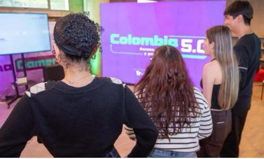

Asistir al encuentro nacional de Colombia 5.0 en Corferias cambia por completo la perspectiva sobre la tecnología. Este no es un evento corporativo frío; es un espacio donde la innovación se encuentra con el propósito social. Bajo la premisa de la "Sociedad 5.0", me quedó claro que el verdadero avance digital de Colombia no se mide solo en la velocidad de la red, sino en cómo transforma vidas y genera soberanía tecnológica.

Inteligencia Artificial y Ciberseguridad en el día a día
Uno de los ejes más fuertes del evento fue la descentralización del conocimiento en IA y la seguridad digital. Pude presenciar paneles increíbles que abordaron desde el uso ético de algoritmos hasta estrategias prácticas para blindar nuestra identidad en la red. Espacios como la iniciativa de CiberPaz demostraron que la alfabetización digital y la creación de entornos virtuales seguros son prioridades urgentes para los ciudadanos del país.

El despliegue de las tecnologías Web3 y el software libre
Para quienes seguimos de cerca el desarrollo de internet, la zona de tecnologías emergentes fue una mina de oro. El evento puso sobre la mesa la importancia del software libre como pilar fundamental para construir una verdadera soberanía tecnológica. Además, las discusiones sobre Web3 evidenciaron que el ecosistema digital colombiano está madurando rápidamente hacia modelos de economía digital más transparentes y colaborativos.

El poder de las Hackatones y el Talento Regional
Lo más emocionante de recorrer el evento fue ver la vibrante energía de las Hackatones de Colombia 5.0. Equipos de jóvenes programadores, estudiantes y creativos compitiendo en vivo para diseñar soluciones tecnológicas destinadas a resolver problemáticas reales de los territorios, desde alertas tempranas ambientales hasta conectividad comunitaria. Esto demostró que el talento digital colombiano está listo para competir globalmente.

Colombia 5.0 me dejó una gran lección: el futuro digital de nuestro país ya no se espera, se construye con sentido humano. Salí de la feria con la certeza de que la tecnología en Colombia dejó de ser un lujo de pocos para convertirse en la herramienta más poderosa de equidad, productividad y transformación social. Y mucho más.